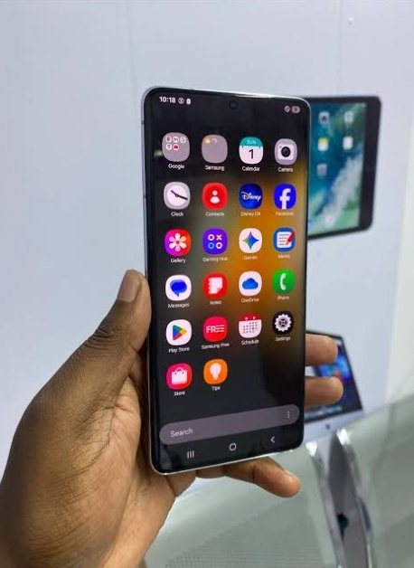

Technology
The Rise of Lipa Pole Pole Phones
When the first Lipa Polepole phone appeared in the markets of Nairobi and Kenya at large, few people believed it would change anything.
It was not the most beautiful phone on the shelf. It did not have the sharpest camera, the largest memory, or the most fashionable brand name. Its screen was modest, its design simple, and its features were aimed more at ordinary needs than luxury.
But its promise was powerful:
“Take the phone today. Pay for it slowly.”For thousands of people who could not afford to pay the full price at once, the idea sounded like an opportunity.

Among them was Amina, a young woman who sold clothes at a small stall near a busy bus station. She had always wanted a smartphone. With one, she believed she could advertise her clothes online, communicate with customers, receive digital payments, and keep in touch with her brother, who worked in another town.
A happy client holding one of well know mkopa lipa polepole phone
The problem was that her income changed every day. Some days she sold many clothes. On other days, she barely made enough to buy food.
“I cannot pay for the whole phone today,” she told the salesman.
“You do not have to,” he replied. “You only need to make a small payment now, then continue paying little by little.”
Amina signed the agreement and carried the phone home.at first, the device seemed to open a door into a new world. She created a social media page for her business and posted pictures of dresses, shoes, and handbags. Customers began sending messages. Some asked her to deliver clothes to their homes. Others paid through mobile money.
Within a few months, Amina’s business had grown.
“I would never have reached these customers without this phone,” she told her friend Zawadi. “It is not just a phone anymore. It is part of my business.”
Amina was not alone. Students used Lipa Polepole phones to attend online lessons and search for information. Motorcycle riders used them to find customers. Farmers checked market prices and weather forecasts. Parents used them to communicate with relatives and access government services.
For many people, the phone became a symbol of inclusion. It allowed those with limited savings to participate in the digital economy without waiting years to afford a device.
The company behind the phones celebrated the growing number of customers. Advertisements showed smiling families, successful entrepreneurs, and young people using technology to improve their lives.
The message was clear: technology should not belong only to people with large bank accounts,but beneath the excitement, another story was beginning,not everyone read the payment agreement carefully. Some customers focused only on the small initial payment and ignored the total amount they would eventually pay. A phone that seemed affordable at first could become much more expensive after the weekly or monthly charges were added together.
Amina herself discovered this after speaking with a neighbor named Joseph.“How much did you pay for yours altogether?” he asked.
“I am not sure,” she replied. “I only know how much I pay each week.”
Joseph calculated the figures on his phone. When he finished, his expression changed.
“You may end up paying far more than the original cash price.”
Amina was surprised. She had thought of the payments as small and harmless. But small payments could become a heavy burden when combined with rent, food, school fees, transport, and emergencies.
The greatest problem came when customers missed payments. In some arrangements, the phone could be restricted or locked until the overdue amount was paid. A person might lose access to messages, business contacts, digital payments, or important documents at the very moment they were experiencing financial difficulty.
For Amina, this happened during a difficult month. Heavy rains damaged part of her clothing stock, and sales dropped sharply. She could not make her payment on time.
One morning, as she prepared to contact a customer, the phone stopped working properly. A message appeared on the screen reminding her to pay.
She tried to remain calm, but the phone was essential to her business. Without it, she could not speak to customers or receive orders.“I took the phone to improve my life,” she said sadly. “Now I feel as if the phone controls my life.”
Her experience made her think more deeply about the promise of affordable technology. The phone had helped her reach new customers, but it had also created a financial obligation that continued whether business was good or bad.
At a community meeting, residents began discussing both sides of the Lipa Polepole system.
A university student named Brian praised the program.
“Without this option, many young people would still be excluded from online learning and job opportunities,” he said. “A phone can be an important tool, not merely entertainment.”an elderly shopkeeper disagreed.“Tools are useful, but people must understand their price,” she replied. “If the contract is complicated, customers may agree to something they do not fully understand.”
Another resident raised concerns about privacy. To manage payments, companies might collect information about customers, their phones, and their payment history. Some people wondered how securely that information was stored and who could access it.
There were also questions about repair and replacement. If a customer lost the phone or it broke, would the payments continue? Would the person receive help, or would they be left with both a damaged device and an unpaid debt?the debate grew louder as more people bought the phones.
Supporters argued that traditional credit systems often excluded low-income workers. Banks demanded paperwork, guarantees, or regular salaries that many people did not have. Lipa Polepole financing, they said, offered a practical alternative.
Critics responded that access to credit was not the same as financial freedom. A person could obtain a phone more easily, but still struggle to manage the debt. The system could help responsible customers while harming those who had unstable incomes or limited understanding of contracts.
Eventually, the company began facing pressure to make its terms clearer. Consumer groups demanded that advertisements show the full cost of the phone, not only the small initial payment. They also called for fair treatment when customers experienced genuine financial emergencies.
Some customers wanted flexible payment plans. Others requested a grace period before the phone was restricted. Many asked for simple explanations in local languages rather than long legal documents filled with unfamiliar words.
Amina joined the discussions. She did not believe the phone was entirely good or entirely bad.
“It gave me a chance,” she said. “But a chance can become a trap if people do not understand the conditions.”
She continued using her Lipa Polepole phone, but she changed the way she managed her money. She separated business income from household expenses and saved a small amount every day toward her payments. Before accepting any future loan, she promised herself that she would calculate the total cost first.
She also began advising other traders.
“Do not ask only, ‘How much do I pay today?’” she told them. “Ask, ‘How much will I pay in the end? What happens if I miss a payment? Can I afford it even during a bad month?’”

Years later, the Lipa Polepole phone had become common in towns and villages. It had helped many people connect to education, commerce, banking, employment, and family. It had also taught an important lesson about modern technology.
One of the latest and modern phones in the lipa polepole arsenal
Access could be empowering, but access without understanding could be dangerous,the phone itself had never been the hero or the villain. Its impact depended on the conditions surrounding it: the honesty of the seller, the clarity of the agreement, the responsibility of the customer, and the protection offered by regulators.
For Amina, the final truth was simple.“A phone can open a door,” she said, looking at the busy street outside her shop. “But before you walk through it, you must know what is waiting on the other side.”